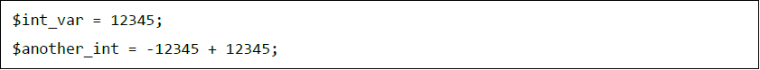
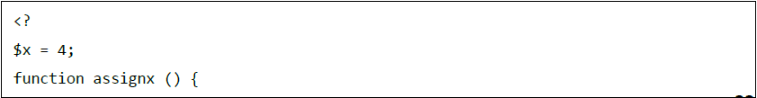
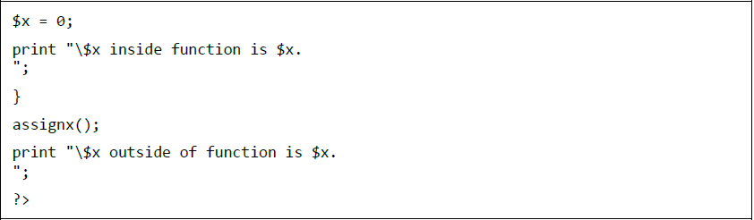
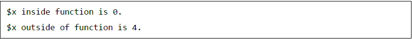
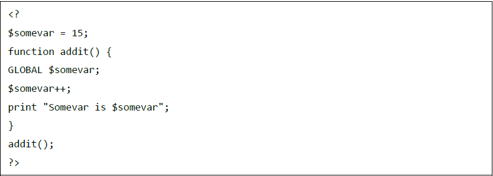
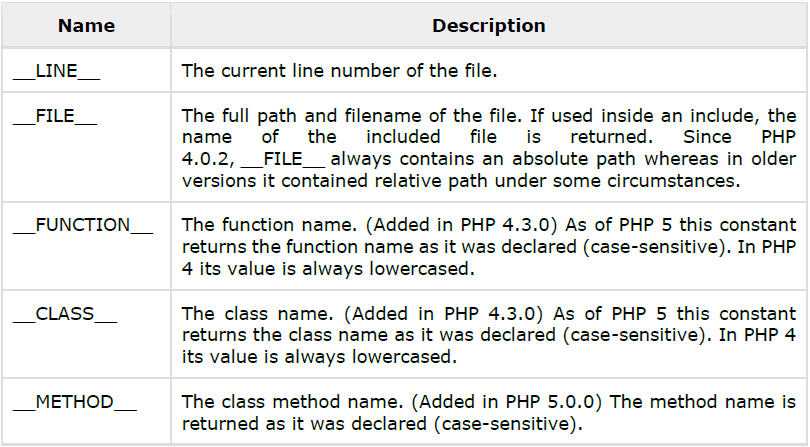

PHP Variable Types
Variables in PHP are in Perl-like struecture which always start with the dollar sign ($). It can be declared even before assigning a value to it. Overall, PHP has eight variable types, namely:
Integers
Integers are the simplest type of variable. They are whole numbers, both positive and negative. The way to declare an Interger variable is seen below:

Integers may be in different formats (i.e. decimals, octals, hexadecimals).
Doubles
Doubles print minmal number of decimal places by default.
Boolean
Bolean has only two values to return, TRUE or FALSE.
Interpreting types of Boolean
Listed below are rules to determine the "truth" of boolean types:
- If the value is a number that is equivalent to zero, it is returned false. Otherwise, it will return true.
- Null values are alwys false.
- Never use double as Booleans
Strings
Strings are seqquence of characters. They are delimited with double quotes. Strings are preprocessed two ways, characters beginning with a backslash are sustituted with special characters; and Variables that start with the dollar sign are substituted with string representation of their values.
PHP Local Variables
PHP local variables are variables that aredeclared inside a function.
 
The following code will give this result:

PHP Global Variables
Global variables are variables that are accessed in any part of the code. However, this kind of variable can only be accessed by placing a keyword 'GLOBAL' before the variable itself. Consider the example below:

This code will then result to the answer: "Somevar is 16".
PHP Static Variables
The last type of variable is Static Variables. Static Variables won't change even if the function exits and will still have the value if the function will be called again.
PHP Constants
PHP constants is simply the identifier of a certain value. By default, constant are case sensitive. It starts with either a letter or an underscore, followed by numbers, letters.
To define a constant, you must use "define()" function. It doesn't require you to use the dollar sign unlike other variables.
PHP Magic Constants
PHP gives predefined constants to any script. Below is a list pf PHP constants.
